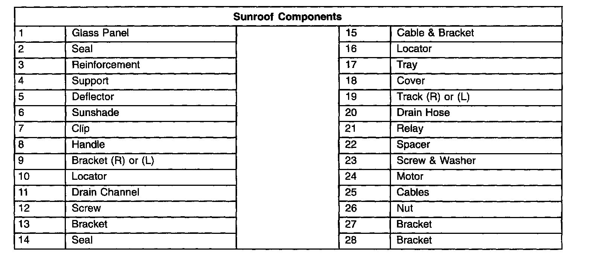
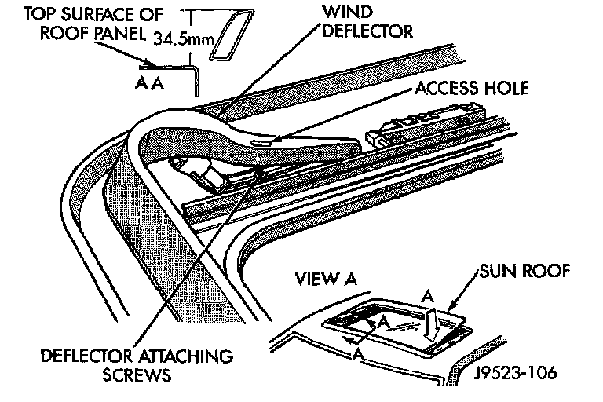

Sunroof Adjustment Bracket
SUNROOF ADJUSTMENT BRACKETREMOVAL
WIND DEFELCTOR
1. Open sun roof glass panel.

2. Remove screws holding wind deflector to sunroof unit side rail.
3. Separate wind deflector from vehicle.
GLASS PANEL
4. Position glass to vent position.

5. Remove wind deflector mechanism covers.
6. Position sunshade full rearward.
7. Loosen nuts holding glass panel to side adjustment brackets shown in View B in above picture.
8. Slide glass panel rearward 12mm (0.5in.) and separate glass from sunroof unit.
9. Lift rear of adjustment bracket to highest vertical position and disengage front of bracket from unit.